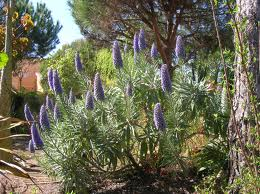

Vipérine ou herbe aux vipères

Vipérine ou herbe aux vipères (Echium vulgare de la famille des Boraginacées)
Toxique pour le Korat.
Partie toxique pour les chats en général et le Korat en particulier :
Toute la plante.
Symptômes du processus pathologique :
Salivation, diarrhée, vomissements, respiration difficile, crampes, problèmes de coordination, pression sanguine basse, perturbations du rythme cardiaque.
Origine de la toxicité (principe actif) :
Irritation de la paroi de l'estomac, Lors d'ingestion en grandes quantités : dommages au foie.